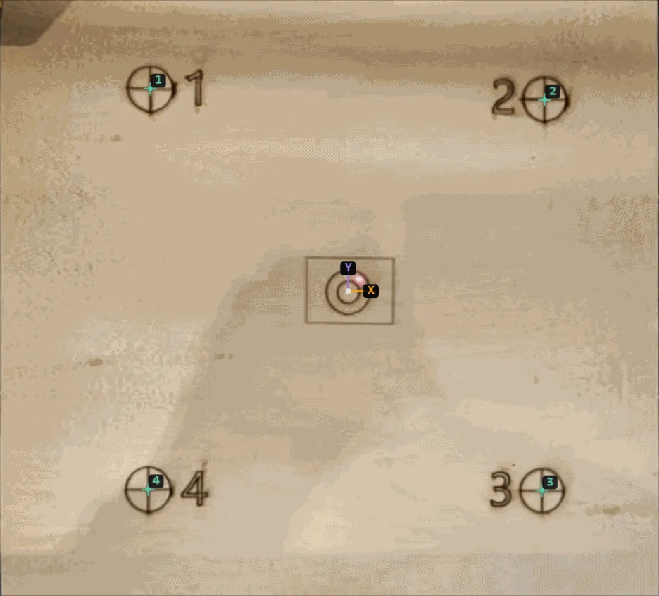

Home/Use cases/Industrial applications
Laser engraving calibration measurement
Use Mesuro to review real machine output during laser engraving setup: mark reference points, compare coordinate offsets, and document calibration results from a photo or exported image.

How it works
Load the output image
Open a photo or exported image of the engraved calibration pattern.
Mark reference points
Use point coordinates for repeated target locations, or set scale when real-world units are needed.
Compare offsets
Check point positions, spacing, edge distances, angles, or alignment drift.
Export the result
Save a clear annotated record for adjustment, handoff, or later comparison.
Questions
Can Mesuro help with laser engraving calibration?
Yes. Use point coordinates or calibrated measurements to compare engraved test marks, inspect offsets, and document setup corrections from output images.
Do I need a physical scale reference?
Not always. Pixel coordinate mode is useful when you need relative positions or repeated point checks; use calibrated scale when you need real-world units.
Can I export the calibration result?
Yes. You can export an annotated image, PDF report, CSV data, or a reusable project file.